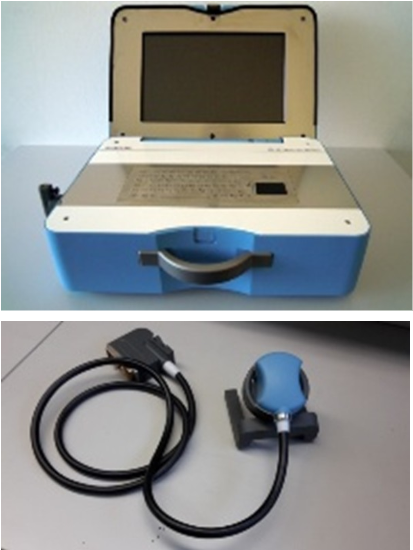

We operate at the intersection of medical imaging and maritime defense.
ASW Poseidon advances passive long-array sonar and command-and-control to improve underwater situational awareness for Anti-Submarine Warfare.
In parallel, our portable-ultrasound technology addresses a capability gap identified by the U.S. Army testing: the lack of field-ready devices for battlefield and emergency medicine.
Medical imaging and maritime defense.
Portable ultrasound fills a U.S. Army–identified field gap.
ASW Poseidon improves underwater awareness via passive long-arrays and C2.
Developed Technologies
ASW Poseidon — Developed Technology (TRL 9)
Passive long‑array surveillance sonar (sea‑bottom fixed or 200 m towed arrays at ~100 m depth) providing wide‑area underwater situational awareness.
TRL 9Passive arraysAdaptive beamformingPLA / C2
Portable Ultrasound — Developed Technology (TRL 6)
First portable volumetric (3D/4D) ultrasound with AI‑guided eFAST and telemedicine GUI for point‑of‑injury care.
Established July 2025Subsidiary of ADICUS4D Ltd (Canada)
NOEMAC Ltd was established in July 2025 as a subsidiary of the Canadian corporation ADICUS4D Ltd. Our mission is to complete the development and commercialization of advanced geometrically multidimensional 3D beamformers and integrate them with AI decision-support systems.
The technologies were conceived and developed by Prof. Stergios Stergiopoulos (Senior & Chief Defence Scientist, DRDC Toronto, retired) and Prof. Konstantinos N. Plataniotis (University of Toronto).
Focus areas
Anti-Submarine Warfare (ASW) surveillance systems based on multidimensional beamforming.
Field-deployable 4D ultrasound with automated diagnostic capabilities for combat casualty and trauma care, and civilian emergency medicine.
Why it matters
Multidimensional beamformers fused with AI decision support deliver higher sensitivity, better localization, and faster operator decisions across maritime sensing and point-of-care medicine.
ASW Poseidon
ASW POSEIDON is NOEMAC’s antisubmarine warfare system, a state‑of‑the‑art passive surveillance sonar at TRL 9. It deploys either a sea‑bottom fixed long hydrophone array or a 200 m towed array at depths of about 100 m. For quiet submarines, the sea‑bottom fixed hydrophone arrays provide detection ranges of approximately 30 nautical miles (~55 km).
The signal‑processing algorithms combine advanced beamformers, spectral analysis, and a Passive Localization Assistant (PLA) aimed at addressing the rapid emergence of UUVs, their operational domains, and new communication and swarm behaviors. The goal is to introduce an AI‑based command‑and‑control (C2) solution that enhances underwater situational awareness for ASW operations, analogous in role to AWACS in the aerial domain.
TRL 9Sea‑bottom fixed long array200 m towed array @ ~100 mQuiet‑sub detection ~30 nmPLA / C2 (AWACS‑like)
Signal‑processing chain
Advanced beamformers (adaptive and synthetic aperture) for narrowband and broadband targets.
Spectral analysis for classification and track persistence.
Passive Localization Assistant (PLA) with C2 integration for UUVs, modern communications, and swarm behaviors.
Advantages versus competing products
Adaptive beamformers minimize strong noise from naval vessels to improve detection of quiet broadband targets.
Acoustic synthetic‑aperture beamformers improve array gain for narrowband signals by approximately 3.5 dB.
Performance characteristics from operational testing
Narrow‑band beamforming outputs for slowly moving underwater targets.
Spectral analysis for narrow‑band outputs used in classification.
Broad‑band beamforming outputs.
Signal trackers.
Passive Localization Assistant (PLA) for location assessment of detected NB/BB beams.
AI tool for automated target classification.
Operational evidence
Representative outputs from trials and evaluations.
Fig. 1: Integrated passive sonar processing chain from NB and BB beamforming to PLA and AI classification.Fig. 2: Detection of a very quiet narrow‑band target at approximately 20 nm range.Fig. 3: Bearing estimates compared with true source bearing.Fig. 4: Passive Localization Assistant (PLA) providing location of detected targets; integrates signal trackers, spectral analysis, and AI tools.Fig. 5: Broad‑band output for shipping traffic showing the trajectory of a fast‑moving target crossing many beam directions over a short time.Fig. 6: Fixed hydrophone array on the sea bottom with supporting hardware peripherals.
The methodologies and findings have been validated and disseminated through peer‑reviewed scientific publications. See ASW selected references below.
The methodologies and findings have been validated and disseminated through peer-reviewed scientific publications. See ASW selected references below.
System Delivery & Consultations
Delivery timeline: within 16 months for a complete sea‑bottom mounted system that includes the hydrophone line array, supporting electronics, the full signal‑processing chain, and the command‑and‑control system.
Scope note: Deployment of the sea‑bottom mounted hydrophone array is not included. NOEMAC provides consultations for optimum underwater site selection with respect to sonar performance.
Numerical assessment of options for the sonar‑equation problem to achieve optimum performance.
Deployment procedures for sea‑bottom or towed configurations of line hydrophone arrays suited to sonar operations.
Training of sonar operators.
Maintenance support for hardware and software sub‑systems.
ASW Poseidon has been tested in operational environments, with assessment results published in Proceedings of the IEEE.
Selected References (ASW)
Stergiopoulos, S. (1998). Implementation of Adaptive and Synthetic Aperture Beamformers in Sonar Systems. Proceedings of the IEEE, 86(2), 358–396.
Stergiopoulos, S. (Ed.). (2009). Advanced Beamformers, in Handbook on Advanced Signal Processing for Sonar, Radar and Medical Imaging Systems (2nd ed.). CRC Press.
Stergiopoulos, S. (1990). Optimum bearing resolution for a moving towed array and extension of its physical aperture. J. Acoust. Soc. Am., 87(5), 2128–2140.
Stergiopoulos, S., & Sullivan, E. J. (1989). Extended towed array processing by overlapped correlator. J. Acoust. Soc. Am., 86(1), 158–171.
Stergiopoulos, S., & Ashley, A. T. (1997). Split-beam processing as a broadband bearing estimator. J. Acoust. Soc. Am., 102(6), 3556–3563.
Stergiopoulos, S. (1995). Noise normalization technique for beamformed towed array data. J. Acoust. Soc. Am., 97(4), 2334–2345.
Stergiopoulos, S., & Urban, H. (1992). Forming a long synthetic aperture in the sea. IEEE J. Oceanic Eng., 17(1), 62–72.
Stergiopoulos, S. (1991). Limitations on towed array gain in a non-isotropic ocean. J. Acoust. Soc. Am., 90(6), 3161–3172.
Portable Ultrasound
Portable 4D Ultrasound Automated Diagnostic System — a developed technology at TRL 6. It addresses a critical capability gap in battlefield medicine by delivering instant volumetric 3D/4D imaging with AI‑guided eFAST for detecting non‑compressible torso hemorrhage (NCTH) at the point of injury. A planar matrix‑array transducer with GPU‑accelerated beamforming (NVIDIA Jetson) enables ~20 volumes per second real‑time imaging with guided acquisition and automated interpretation.
System integration (two real‑time 3D prototypes) — TRL 6.
Prototype & GUI imagery
Fig. 1: Development of a GUI with telemedicine communication capabilities.Fig. 2: Development of an automated diagnostic tool for detecting abdominal bleeding in Morison’s pouch.

Fig. 3: System Integration and delivery of 2-prototype real-time 3D ultrasound imaging systems. Fig. 4: The TeleConsult GUI. Left: Screenshot of the interface with ultrasound data and the operating panel. Center, the user guide for the correct placement of the probe. Right, Morrison-pouch, with free fluid.
Selected References (Portable Ultrasound)
K. L. Amezcua, et al., "Design and Testing of Ultrasound Probe Adapters for a Robotic Imaging Platform," Scientific Reports, 14(1):5102, 2024. doi:10.1038/s41598-024-55480-0.
Yuan Bi, et al., "Machine Learning on Robotic Ultrasound Imaging: Challenges and Perspectives," arXiv:2401.02376, 2024.
Torres Hernandez, et al., "Evaluation of Deep Learning Model Architectures for Point-of-Care Ultrasound Diagnostics," Bioengineering, 11(4):392, 2024.
D. C. Hile, et al., "Is Point‑of‑Care Ultrasound Accurate and Useful in the Hands of Military Medical Technicians?" Military Medicine, 177(8):983–987, 2012.
J. D. Monti and M. D. Perreault, "Impact of a 4‑hour Introductory eFAST Training Intervention Among Ultrasound‑Naïve U.S. Military Medics," Military Medicine, 185(5‑6):e601‑e608, 2020.
S. Stergiopoulos, K. Plataniotis, and M. Marsousi, "Optimal Probe Placement for FAST by Organ Segmentation in 3D Ultrasound Images," patent filed, DRDC File: 1416‑14/007CA, 2019.
P. Weber, K. Plataniotis, S. Stergiopoulos, G. Sakas, et al., "Portable, 3D/4D Ultrasound Diagnostic Imaging System (PUDIS)," NATO HFM‑249 Symposium, Warsaw, April 2015.
M. Marsousi, K. Plataniotis, and S. Stergiopoulos, "An Automated Approach for Kidney Segmentation in Three‑Dimensional Ultrasound Images," IEEE JBHI, 2016.
M. Marsousi, K. Plataniotis, and S. Stergiopoulos, "Computer‑Assisted 3D Ultrasound Probe Placement for Emergency Healthcare Applications," IEEE TII, 2016.
S. Stergiopoulos and A. Dhanantwari, "High Resolution 3D Ultrasound Imaging System Deploying a Multi‑Dimensional Array of Sensors," technical report/patent notes.
S. Stergiopoulos and A. Dhanantwari, US Patent 6,719,696, 2004.
S. Stergiopoulos and A. Dhanantwari, US Patent 6,482,160, 2002.
S. Stergiopoulos, "3D Ultrasound System and Method," US Patent Application 61/777,321, 2018 (DND ref. 1416‑18003).
S. Stergiopoulos, M. Marsousi, and K. Plataniotis, "Automated Diagnostics in 3D Ultrasound System and Method," US Patent Application 61/777,343, 2018 (DND ref. 1416‑18004).